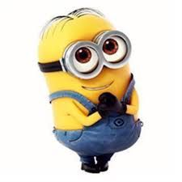
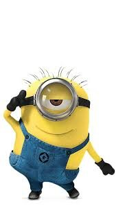
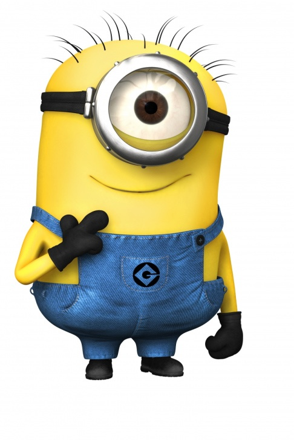

The Minions are small, yellow, melodious henchmen shaped like pill capsules who wear overalls and goggles and have one or two eyes. They mostly speak incomprehensible gibberish, which is partly derived from other languages, including Bahasa Indonesia, French, English, Italian, Spanish, and Hindi.[2][3][4] Although seemingly nonsensical, the English-sounding dialogue is dubbed differently for every country, in order to make the sounds somewhat recognizable.[5] They have the most ordinary of names, with Kevin, Stuart and Bob being the names of the lead trio in Minions, and Mel being the leader of the Minions in Despicable Me 3.[6][7]
Minions, the 2015 animated feature film, shows that they have existed since the beginning of life on Earth, and want, above all else, to serve the most terrible of villains.[8] In the 2010 short film "Banana", the Minions are revealed to have an uncontrollable craving for fruits, especially bananas.
My BRAIN is like the Bermuda Triangle....
Information goes in and then it's never found again...

Mike
Mike is small and sweet, has two eyes and combed hair. He is an obedient and hardworking fellow. He works in the mail room along with Ken. He turns into an evil minion after being splashed with an expired PX-41 serum. He eats all the packages when Ken plays video games.

Bob
Bob is cute, short, one-eyed minion with spiky hairs in Despicable Me. Besides having the common physical characteristics of minions, he also possess additional physiological characteristic of surviving without air. Currently he is in the outer space, orbiting the earth without oxygen.
Lance
Lance is small, one-eyed minion having buzz-cut hair. He loves dancing and singing. Also he is a clean freak. You can see Lance placing some newspaper or magazines on a table when Gru is surfing about El Macho on his laptop.
